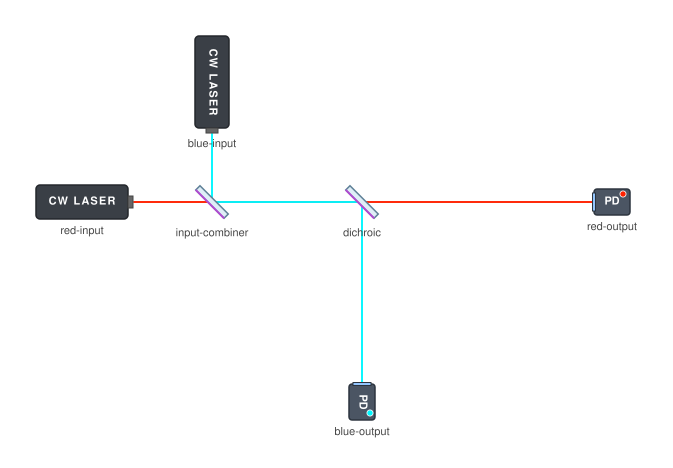
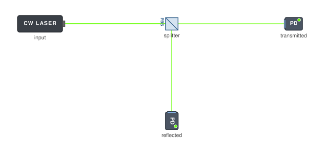
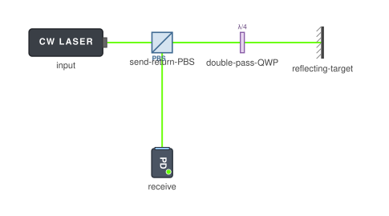
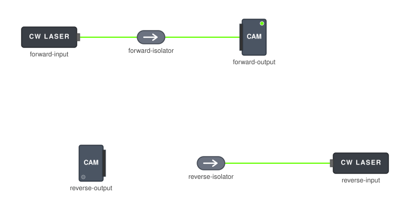
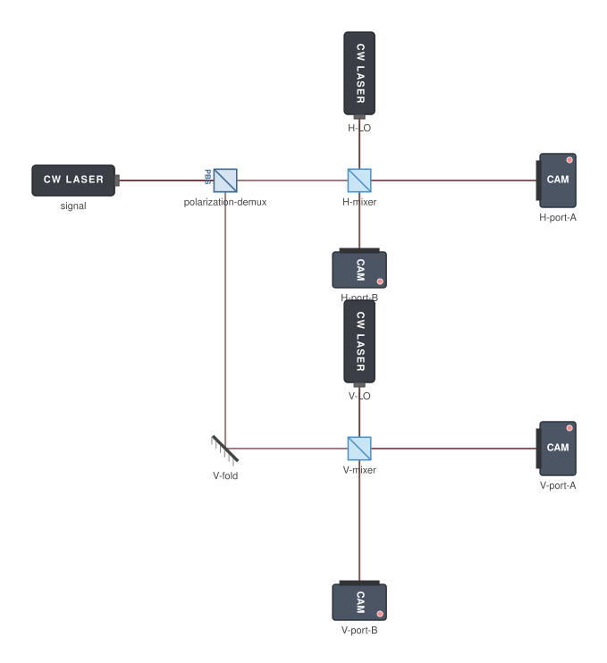
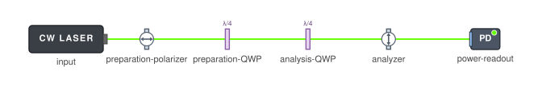
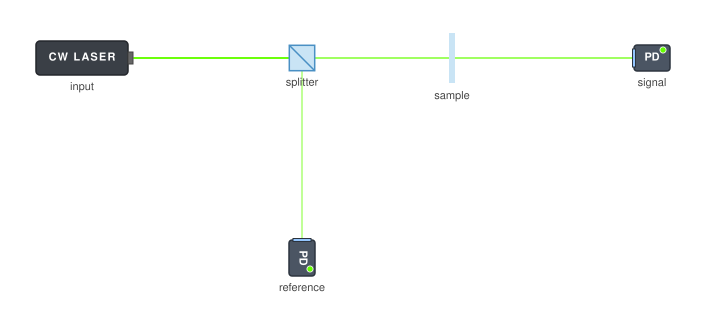

Separating, combining, and routing channels
8 optical patterns for separating, combining, and routing channels: compare arrangements, applications and design constraints, with 8 OpticalSetup setups to explore.
Choose an arrangement below to inspect its optical design, practical constraints, related patterns and current support in OpticalSetup.

Wavelength combining and splitting
Route different spectral bands through shared or separate optical paths.
Open setup →

Polarization combining and splitting
Use orthogonal polarization states as separable optical channels.
Open setup →

Waveplate-polarizer attenuation
Adjust delivered power by rotating polarization before selecting a channel.
Open setup →

Polarization-based send/return separation
Distinguish outgoing and returning light by their polarization transformations.
Open setup →

Nonreciprocal routing
Direct light differently in forward and reverse propagation.
Open setup →

Polarization diversity
Process both orthogonal polarization components in parallel.
Open setup →

State preparation and analysis
Prepare and measure optical polarization through controlled transformations.
Open setup →

Sample/reference splitting
Provide a simultaneous reference channel alongside the sample channel.
Open setup →